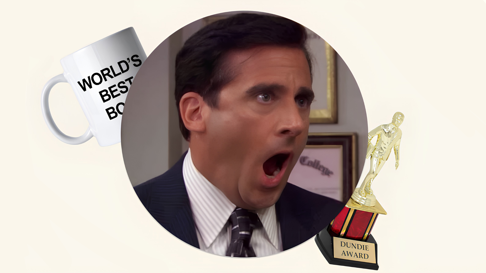

Você seria:
Sua motivação é a aceitação. Você vê o trabalho como um palco para relacionamentos e quer ser o centro das atenções, muitas vezes confundindo vida profissional com pessoal.

Michael Scott é o gerente regional da filial da Dunder Mifflin em Scranton, conhecido por ser infantil, egocêntrico e pouco profissional. Apesar de suas atitudes constrangedoras e necessidade de atenção, ele é um vendedor talentoso e, no fundo, deseja ser amado e considera sua equipe uma "família".